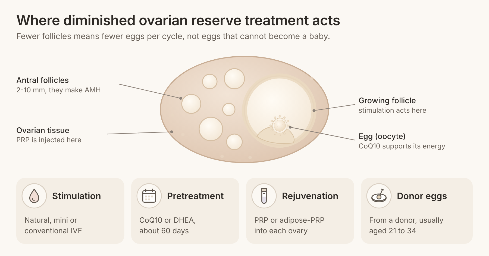
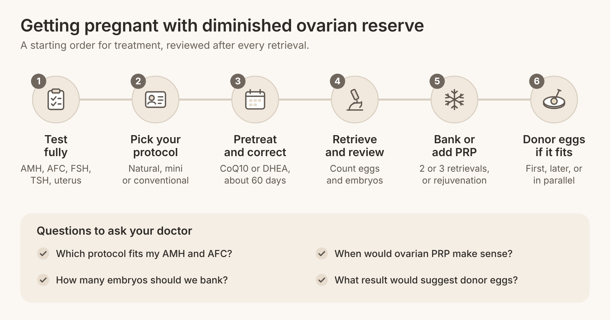

Quick answer: Women with diminished ovarian reserve get pregnant every year, with their own eggs and with donor eggs. Diminished ovarian reserve treatment works best as a plan in steps: a stimulation protocol matched to your reserve, short pretreatment, banking embryos across cycles when needed, ovarian rejuvenation to support the ovary, and donor eggs as a strong path, not a last resort. The order you try them in matters as much as the treatments themselves.
In this article
Diminished ovarian reserve treatment aims to get you the most healthy eggs and embryos your ovaries can give, as quickly as possible, and to add other paths when that is not enough. Diminished ovarian reserve (DOR) means your ovaries hold fewer eggs than expected for your age. It is usually found with a low anti-Müllerian hormone (AMH) blood test, a low antral follicle count (AFC) on ultrasound, or a high follicle-stimulating hormone (FSH) level.
If you have just heard the words, you are not alone in how it feels. One woman wrote in a patient forum, "It has all just blown my brain and I feel a bit overwhelmed." Another said she "thought it was the end of our baby dreams." It was not, and it rarely is.
Here is the mechanism in plain words. Each month a small group of follicles (tiny fluid sacs that each hold an egg) starts to grow. The antral follicles counted on ultrasound measure 2 to 10 mm, and they make AMH. Fewer follicles means a lower AMH and fewer eggs per IVF cycle. It does not tell you that the eggs you have cannot become a baby.
The American Society for Reproductive Medicine (ASRM) is clear on this. Its 2020 committee opinion on ovarian reserve testing states that "evidence of DOR does not necessarily equate with inability to conceive" and that these tests should not be used to deny access to infertility treatment. They are good at predicting how many eggs a cycle will give, which is exactly why they help plan treatment.
At Rejuvenating Fertility Center, low reserve is a daily specialty, with no age cutoff and no weight cutoff. If you want background on the numbers first, see our guides on how to boost AMH and fertility treatment for high FSH.
Most women start with their own eggs, and three treatments shape how well that works: the protocol, the preparation and the number of cycles. Each one is simple to start and can be adjusted after the first retrieval.
More medication is not always better when reserve is low, because the ovary can only respond with the follicles it has that month. RFC offers three types of IVF: natural, mini and conventional. Natural IVF uses your own cycle with little or no stimulation, mini IVF uses low doses of medication, and conventional IVF uses higher doses to recruit as many follicles as possible.
Many patients ask the same thing one woman did on a forum: "Does anyone know much about modified ivf?" The short answer is that for low responders, gentler protocols perform about as well as high-dose ones, with less medication. The research section below has the numbers.
Pretreatment means taking a supplement or hormone for several weeks before stimulation, while the next group of eggs is maturing. Coenzyme Q10 (CoQ10) supports energy production inside the egg. Dehydroepiandrosterone (DHEA) is a hormone the body turns into androgens, which may help small follicles respond. Forum threads are full of the question, "Has anyone received any particular recommendations re supplements pre-IVF?"
The evidence for both is promising but not final, and the right choice depends on your hormone levels and history. That is why DHEA for diminished ovarian reserve should be prescribed and monitored by your doctor, not bought off the shelf. RFC's Rejoova line is also designed to support egg health as a complementary option.
When each cycle gives only a few eggs, doing two or three retrievals in a row and freezing the embryos can give you more chances from one plan. This is called embryo banking. It also lets you test embryos for chromosome errors before transfer if that fits your goals. Your doctor reviews each retrieval and adjusts the protocol before the next one.
Ovarian rejuvenation aims to improve the ovary's response before you stimulate it. RFC was the first US center to develop ovarian platelet-rich plasma (PRP) protocols for diminished ovarian reserve, and it has published world-first research in this area.
PRP is made from your own blood. It is spun to concentrate platelets, which release growth factors, and then injected into each ovary through the vagina under ultrasound guidance. The goal is to wake up follicles that are resting and help them respond to stimulation. See how it works on our PRP ovarian rejuvenation page.
Adipose-PRP adds a small amount of your own processed fat tissue, rich in repair cells, to the PRP. RFC published the first live births after this treatment in women over 45. Our comparison of PRP for ovaries and adipose-PRP explains who each one suits.
Low reserve often travels with other issues: thyroid imbalance, endometriosis, a thin uterine lining or immune factors that affect implantation. Treating them does not add eggs, but it helps each embryo you make have its best chance. RFC's reproductive immunology and endometriosis program checks for these alongside your IVF plan.
Some paths work around low reserve instead of through it. Both are wins in their own right.
Donor eggs come from a young, screened donor, usually aged 21 to 34, and you carry the pregnancy. Because egg age drives success, donor eggs give the highest live birth rate per transfer of any option. RFC's donor egg program reports 95% egg thaw survival and an 82% clinical pregnancy rate. Our guide to egg donor IVF vs. your own eggs helps you weigh the two.
If you are not ready to conceive, egg freezing with no age or weight cutoff protects the eggs you have today. If you are ready and your tubes and partner's sperm are healthy, trying naturally or with IUI while your cycle is monitored is reasonable for a short time, since low reserve does not stop ovulation.
The research supports a stepwise plan: gentle stimulation works as well as aggressive stimulation for low responders, more eggs across cycles raise your odds, and PRP and pretreatment show real but early signals. Here are the key studies, as of 2026.
Treatment | Study | Who was studied | What it found |
Mild vs. conventional stimulation | 15 randomized trials in poor responders | Fresh live birth about equal (risk ratio 1.01); slightly fewer eggs and more cancellations (risk ratio 1.48) with mild | |
CoQ10 pretreatment | 186 women under 35 with low reserve | 60 days before IVF: median 4 eggs vs. 2, more top-quality embryos | |
DHEA pretreatment | 8 trials, 878 women, mostly poor responders | Live birth 15% to 26% with DHEA if 12% without; moderate-quality evidence | |
More eggs per retrieval | 4,570 women aged 38 and over | At 40 to 41: about 24% cumulative live birth with 12 eggs vs. about 12% with 4 | |
Banking frozen eggs | 440 women with DOR | Cumulative live birth 20.4% banked vs. 27.5% fresh (no significant difference) | |
Ovarian PRP | 38 human studies | AMH up 0.36 ng/ml at 3 months, AFC up 1.60; pooled live birth 11% |

A few points help you read the table. The mild stimulation meta-analysis concluded that mild stimulation "could be considered as a treatment option" for low-prognosis poor responders, which supports natural and mini IVF as first-line choices, not compromises.
In the CoQ10 trial, pregnancy and live birth rates tended to be higher with CoQ10, but the difference was not statistically significant in a study of this size. In the Cochrane review of DHEA, the benefit was seen in women who had already had fertility treatment, and it became uncertain when the trials at higher risk of bias were removed. Both are reasonable to discuss, not guaranteed.
The banking study adds a useful lesson. Banking frozen eggs on its own did not raise the live birth rate, and the banked group had more miscarriages; women who banked 15 or more eggs did best, with a 29.0% live birth rate per transfer. The Devesa study points the same way: what moves the odds is the total number of good eggs and embryos, so banking works best as part of a plan that also improves each cycle's response.
For ovarian PRP, the 2024 meta-analysis found a 7% spontaneous pregnancy rate after treatment, 177 live births among 1,482 patients, and better ovarian markers, though most studies were observational. In RFC's own published case series, a 46-year-old with an AMH of 0.29 and an AFC of 2 had an AFC of 14 six months after adipose-PRP, conceived naturally and delivered at 47. A 45-year-old made 4 mature eggs and 2 blastocysts three months after treatment, and her euploid embryo led to a birth.
Donor eggs remain the strongest single option on live birth per transfer. According to ASRM's ReproductiveFacts, US data for 2020 show an average birth rate of 53.5% per embryo transfer with fresh donor eggs.
Start with the step that fits your age, your test results and how much time you have, then review after every retrieval. Most top-ranking pages list the treatments but never say what order to try them in. This is the order RFC uses as a starting point, adjusted for each woman.
Test fully before treating. AMH, AFC, day-3 FSH and estradiol, thyroid tests, a uterine check and your partner's semen analysis. This tells you whether low reserve is the only issue.
Pick a protocol for your reserve, not a standard one. For many women with low AMH, natural or mini IVF is a smart first cycle, because outcomes match higher-dose cycles with less medication.
Use the weeks before stimulation. Discuss CoQ10 or DHEA for about 60 days, the window used in the trial above, and correct thyroid or other findings at the same time.
Review after the first retrieval. Count eggs, mature eggs and embryos. If you made embryos, consider banking with a second or third retrieval. If the response was very low, this is the time to discuss ovarian PRP or adipose-PRP before the next cycle.
Set a review point together. Agree in advance what result after two or three retrievals would make you change course, so the decision is planned, not made in a hard moment.
Add donor eggs when it fits your goals. Some women move to donor eggs after a few own-egg cycles; others choose them first, for speed. Both are valid, and you can freeze your own embryos and still use donor eggs later.
Age changes the timing, not the plan. Under about 38, there is often time for two or three own-egg cycles with pretreatment. After 42, many women bank embryos quickly, add rejuvenation early, or plan donor eggs in parallel. If you are under 40 with a straightforward history, our sister clinic Aurea Fertility Center may also be a good fit.
Your next step is a consultation that turns your numbers into a dated plan. Here is what to bring and what to ask.
Tests to ask for (or bring):
AMH and antral follicle count, ideally recent
Day-3 FSH and estradiol
Thyroid-stimulating hormone (TSH)
A uterine cavity check (saline sonogram or hysteroscopy)
Your partner's semen analysis
Records from any past IVF cycle: protocol, eggs, embryos
A realistic timeline:
Weeks 1 to 2: consultation, testing and review
About 60 days: pretreatment, if chosen, while thyroid or other findings are corrected
Month 2 to 3: first stimulation cycle and retrieval
Each following month: a further retrieval for banking, PRP before the next cycle, or a transfer
Questions for your doctor:
Which protocol do you suggest for my AMH and AFC, and why?
Should I take CoQ10 or DHEA first, and how will you monitor it?
How many embryos should we aim to bank?
When would ovarian PRP or adipose-PRP make sense for me?
What result would make you suggest donor eggs?
For costs, see RFC's pricing page. If you live far away, you can often do monitoring near home and travel in for the retrieval and transfer.

There is no single best treatment; the best plan matches your age, AMH, follicle count and goals. For many women it starts with natural or mini IVF and pretreatment, adds embryo banking or ovarian PRP if the response is low, and includes donor eggs as a strong option. A specialist can put these in the right order for you.
Women usually get pregnant with diminished ovarian reserve through IVF that is tailored to low reserve, sometimes after several retrievals, or with donor eggs. Some conceive naturally, because low reserve does not stop ovulation. ASRM states that a diagnosis of DOR does not necessarily mean you cannot conceive.
A Cochrane review of 8 trials found DHEA was linked with higher live birth rates, mostly in women who had already had fertility treatment, with moderate-quality evidence. The result became uncertain when weaker trials were removed. It is worth discussing with your doctor, who should prescribe and monitor it.
A 2024 meta-analysis of 38 studies found that AMH and antral follicle counts rose after ovarian PRP, with a pooled live birth rate of 11%. Most studies were observational, so larger trials are still needed. RFC has published live births after adipose-PRP in women over 45.
Many women with low reserve need two or three retrievals to bank enough embryos for a good chance at a live birth. Research shows that the total number of eggs collected is linked with higher cumulative live birth, especially up to age 41. Your doctor should review the plan after each retrieval.
Yes. Getting pregnant with diminished ovarian reserve after 40 is a challenge RFC treats every day, with own-egg IVF, embryo banking, ovarian rejuvenation and donor eggs. RFC has no age cutoff, and patients have conceived in their mid-40s and beyond.
Diminished ovarian reserve changes how you plan treatment, not whether you can build your family. The right treatments, tried in the right order and reviewed after every cycle, give you the best chance with your own eggs and a clear path to donor eggs if you want one.
If you have been told your reserve is low, Rejuvenating Fertility Center specializes in exactly these cases, with no age or weight cutoff. Book a consultation and we will build a plan around your numbers and your goals.